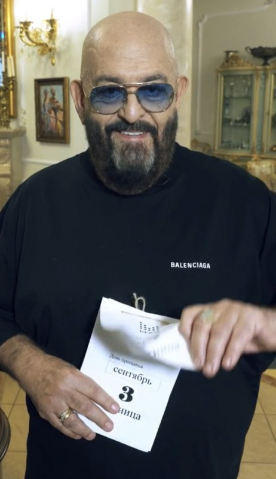

Михаил Шуфутинский

Биография
Даты
Личная жизнь
Ссылки
Биография
Ранние годы
Михаил Шуфутинский родился 13 апреля 1948 года в Москве, в семье участника Великой Отечественной войны — врача Захара Давидовича Шуфутинского.
Бабушка с дедушкой по отцу Берта Давидовна и Давид Яковлевич были родом из Украины, из Елисаветграда (Кропивницкий) и Черкасс соответственно. Они занимались воспитанием мальчика после того, как погибла его мать.
Михаилу тогда было пять лет.
Окончил музыкальную школу по классу баяна и Московское музыкальное училище имени М. М. Ипполитова-Иванова по специальностям «дирижёр», «хормейстер», «преподаватель музыки и пения».
В одно и то же время с Михаилом Шуфутинским и по этим же специальностям в училище училась Алла Пугачёва.
Карьера
Выступал с различными ансамблями в Москве и в Магадане. С 1971 по 1974 год работал в магаданском ресторане «Северный». В ресторанах исполнял песни Александра Вертинского и Петра Лещенко.
Позже стал руководителем ВИА «Лейся, песня», который, в основном, исполнял песни Вячеслава Добрынина.
Даты
В 1981 году вместе со своей семьёй эмигрировал в США. В 1983 году, уже в качестве аранжировщика, клавишника и продюсера выпустил альбом Анатолия Могилевского «У нас в Одессе это не едят», а в 1984 году — альбом «Я Вас люблю, мадам».
Около десяти лет играл в составе различных ансамблей в ресторанах, создал собственную шоу-группу «Атаман-бэнд» (так же, как и ресторан «Атаман»).
Позднее Шуфутинского, как уже известного певца и музыканта, пригласили работать в русский ресторан «Арбат», который находился в районе Голливуда.
В 1990 году впервые после эмиграции приехал в СССР и дал несколько концертов. Первый концерт по возвращении дал в Киеве[8]. С тех пор Михаил Шуфутинский постоянно приезжал в Россию на гастроли.
В 1997 году написал автобиографическую книгу «И вот стою я у черты…».
В 2003 году переехал в Россию на постоянное место жительства.
В 2008 году принимал участие в проекте канала НТВ «Суперстар 2008. Команда мечты».
Личная жизнь
Первая жена — Татьяна Ростова.
Вторая жена — Маргарита Михайловна Шуфутинская. Поженились 2 января 1971 года. Жила в США и в России, уделяла много
внимания всем членам семьи: двоим сыновьям, пятерым внукам и двум внучкам. Вся семья часто собиралась вместе в Москве и в
Лос-Анджелесе. Умерла 5 июня 2015 года в возрасте 66 лет в Лос-Анджелесе.
Старший сын — Дэвид Шуфутинский (род. 29 августа 1972 в Магадане), женат на Анжеле Петросян. Живёт с семьёй в Москве и
занимается продюсированием звука в кино[4]. Внуки — Андрей (род. 1997), Анна (род. 2006), Михаил (род. 2009)
.
Младший сын — Антон Шуфутинский (род. декабрь 1974), был военным врачом Военно-Морских Сил США. Женат на американке Брэнди.
Антон Шуфутинский и его семья (жена, три сына и дочь) живут в Филадельфии, где он преподаёт в университете и
заканчивает докторскую диссертацию[4]. Внуки — Дмитрий (род. 1996), играл на саксофоне в школьном оркестре, Ной (род.
2002), Захар (род. 2009), Ханна Ренэ (род. 13 сентября 2012).
Российский дом Шуфутинского находится в 9 км к юго-западу от Москвы. Это двухэтажный особняк площадью 913 м² с бассейном,
построенный по заказу певца в начале 2000-х годов в коттеджном посёлке «Сапожок» близ Внуково. После смерти супруги он
приобрёл коттедж в Филадельфии, неподалеку от дома младшего сына. Также у него есть поместье в стиле ранчо в Лос-Анджелесе, где ранее проживала его жена.
Ссылки
Инстаграм артиста
Официальный сайт
Подборка мемов про 3е сентября